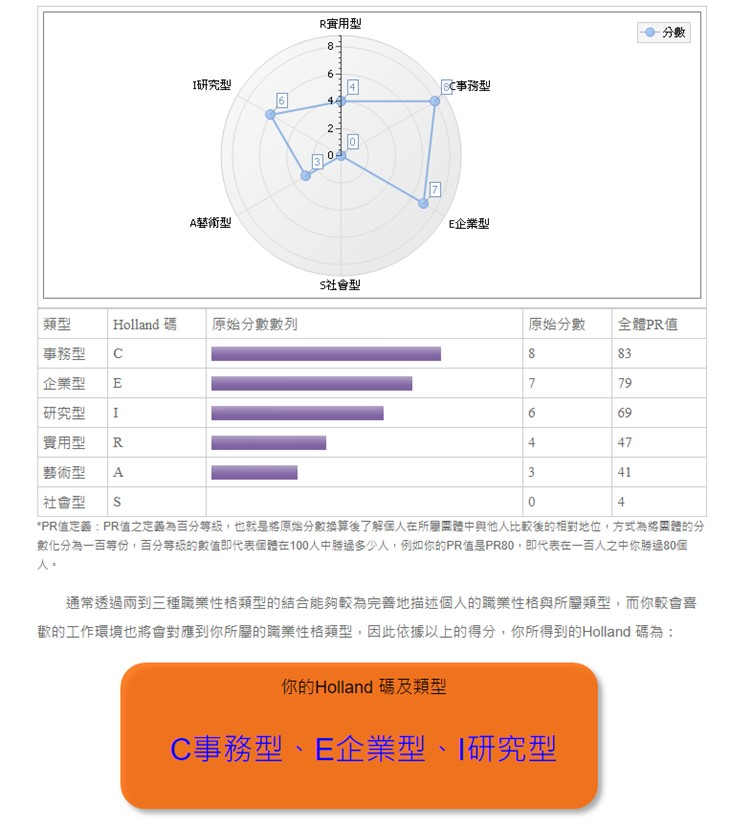

UCAN

在職業性格傾向上，
"事務型"的人個性謹慎，做事講求規矩與精確，樂於處理資料、計算及文書，喜歡在具有明確規範的環境下工作，能夠按部就班、有效率、精確仔細地完成主管交辦的工作。
"企業型"的人喜歡選擇具有冒險性、支配性、需要熱忱與精力的工作，喜歡進行策劃與領導，擁有遠大的抱負、口才、說服力，充滿幹勁與自信，希望擁有權力改善不合理的事，希望自己的表現受他人肯定，並成為團體中的焦點人物。